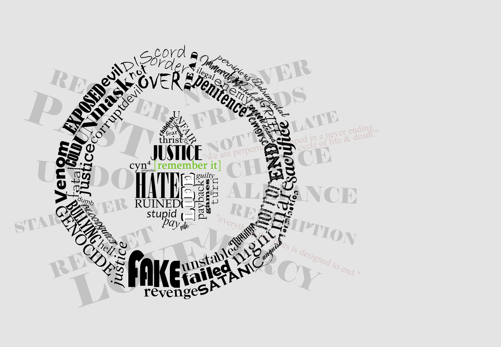
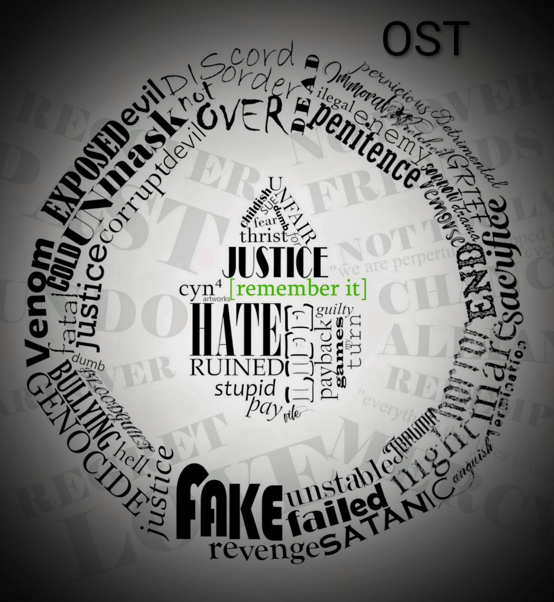
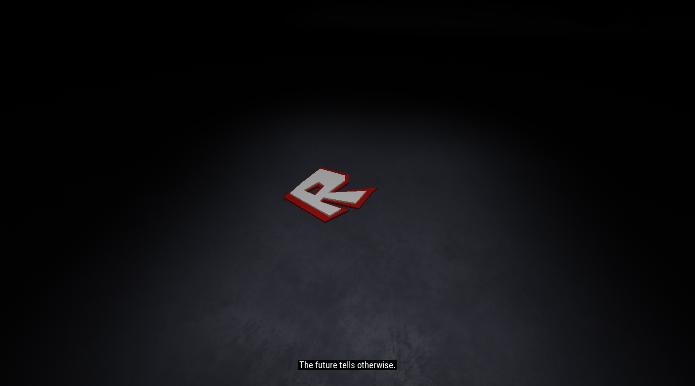
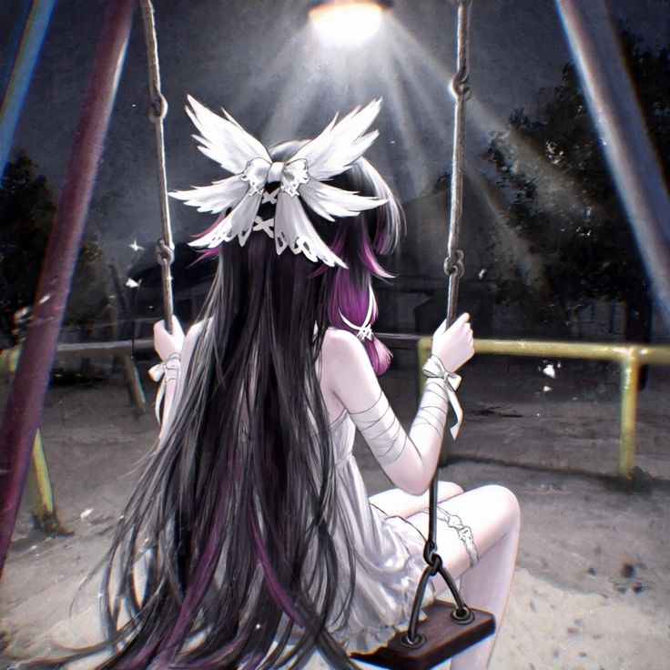

What'sDown
What'sDown is a free and open-source project that tries to serve a similar function as Vencord and Revenge, popular modification clients for Discord, but for WhatsApp, still using the original client, in legacy of WhatsAppPlus, GBWhatsApp, and other projects.

NovaRevival
NovaRevival is a Windows Phone (7-7.8) revival project, focused on preserving the soruces of custom roms, hacks, apps, and others for this forgotten OS. For the future, we plan to expand our archive, make a appstore, and perhaps a full revival of the Windows Live ID ecosystem, like the Marketplace.


"Remember It?"
A perhaps abandonned asymetrical game, for Roblox. Was planned to be made based on an entire drama I've had, but, I didn't finish it due to the hate I received when releasing some of the OST's, because it was around that drama, causing, yet another drama. But I'm planning to focus on this project sometime in my developer life. On both the thumbnail and logo, say "cyn4", it was my old username, based on cynessa from Murder Drones.


Make It Rain Engine
A FNF engine based on NovaFlare Engine. I plan to introduce features like dynamic lyrics, 3D mode, better note manipulation systems, better camera manipulation systems, CD & DVD modes (CD is 2D and studio version, DVD is 3D and live version) a more dynamic experience, and more other features. More focused for lyrical songs being charted, and more dynamic gameplay.


Make It Rain Engine: Fernandinho
The supposed first game using MIRE. It would use Fernandinho's songs, a famous rock artist in Brazil. It would also use 90% of MIRE's features, and include one of his albums, Teus Sonhos (Ao Vivo, HSBC Arena RJ), as a tutorial for the gameplay features.


A FNAF:SL fangame made by me, Norvyn3, v, and xhnz. It's lore would be around Roblox's timeline, instead of just being a repetitive "i miss retro" game, it will be directly at Roblox's corporation's story.

Me!
I'm the creator of all these projects. I'm brazillian, and I've always wanted to have my own YouTube channel, website, and be a game developer. But really, I'm just a nerd. I'm nice, and always open for conversations, allthough I have my problems. I like rock. The rest of my socials are listed at my Discord profile.